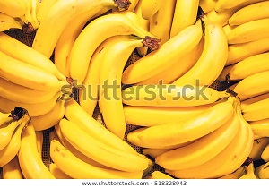
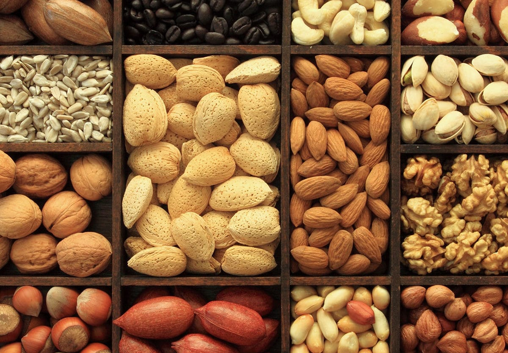
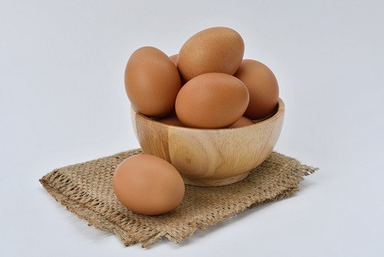

GUIDS AND HEALTHY TIPS FOR UNDERWEIGHTED ADULTS:-
Being underweight isn't good for your helth.Weighing too little can contribute to weekand immune system,fragele bones and feeling tired.
WHY ARE YOU UNDERWEIGHT?
If our BMI Calcultor told you that you may be the underweight, think about why this might be:-
- Have you been finding it difficult to make time to have a healthy, balanced diet with regular meals?
- Have you lost your appetite, perhaps because you're worried or stressed?
- Have you been trying to lose weight?
WHY BEING UNDERWEIGHT BE A PROBLEM?
Being underweight isn't good for you. It could cause:
- Nutritional deficiencies: if you're underweight, it's likely that you're not consuming a healthy, balanced diet, which can lead to you lacking nutrients that your body needs to work properly. Calcium, for example, is important for the maintenance of strong and healthy bones. If you don't get enough calcium, you risk developing osteoporosis (fragile bone disease) in later life. If you're not consuming enough iron, you may develop anaemia, which can leave you feeling drained and tired.
- Weakened immune system: your immune system isn't 100% when you're underweight, so you're more likely to catch a cold, the flu or other infections.
- Fertility problems: women who are underweight can find that their periods stop.
TIPS TO BOOST YOUR CALORIE INTAKE:-

If you're trying to gain weight, eat foods that are not only healthy but also high in energy. Try the following:-
- For breakfast, porridge made with whole (full-fat) milk with chopped fruit or raisins sprinkled on top; or eggs on toast.
- Milkshakes are a great snack (make them at home and take them to work or college). Fortify them with milk powder for extra protein and calories.
- For a healthier lunch, try a jacket potato with baked beans or tuna on top, which contains energy-giving starchy carbohydrates and protein.
- Peanut butter on toast makes a great high-energy snack.
- Yoghurts and milky puddings, such as rice pudding, are high in energy.
- Unsalted nuts.
Although fruit and vegetable juices and smoothies count towards your 5 A Day, remember to limit these to no more than a combined total of 150ml a day.


